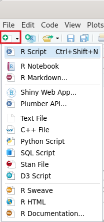
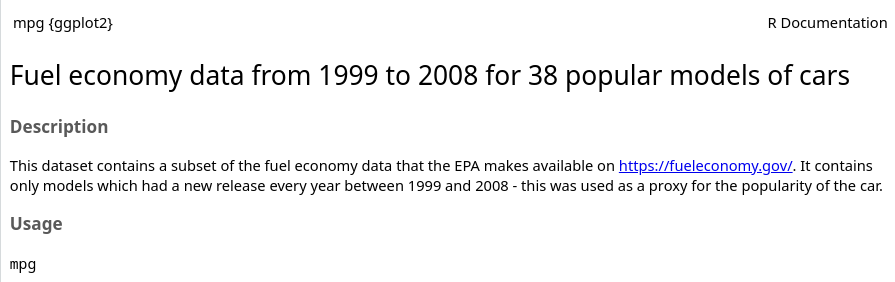

Statistics is a set of tools we use to summarize data
Defining Statistics
Level 2
“The practice or science of collecting and analyzing numerical data in large quantities, especially for the purpose of inferring proportions in a whole from those in a representative sample” (Oxford Dictionary).
Create an R Script and name it “Descriptive Statistics.R”
Option 1: “File” → “New File” → “R Script”
Option 2:


manufacturer
model
displ
year
cyl
trans
volkswagen
gti
2.0
2008
4
auto(s6)
hyundai
tiburon
2.7
2008
6
manual(m5)
toyota
corolla
1.8
1999
4
auto(l4)
honda
civic
1.6
1999
4
manual(m5)
toyota
camry
2.2
1999
4
auto(l4)
ford
mustang
5.4
2008
8
manual(m6)
# Load the packageslibrary(tidyverse)# View the dataset in the consolempg# View the dataset in a spreadsheet (sortable columns)View(mpg)# List all of the variables in the datasetnames(mpg)# Access any single variablempg$manufacturer